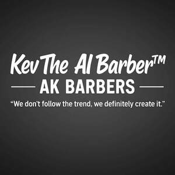

Trade Mark Journal No.2025/026 27 June 2025
UK00004219176 15 June 2025 (9,25,35,41,42,44)

- Class 9
- Social software; Media content; Media software; Digital storage media; Downloadable educational media; Covers for digital media players; Recorded media; Digital data recording media; Data media (Optical -); Data storage media.
- Class 25
- Plus fours; Basic upper garment of Korean traditional clothes [Jeogori]; School uniforms; Sports [Boots for -]; Peaked caps; Pelerines; Khimars; Pants (Am.).
- Class 35
- Sales promotions at point of purchase or sale, for others; Marketing by telephone; Providing marketing consulting in the field of social media; Media relations services; Providing business information in the field of social media; Advertising and marketing services provided by means of social media; Advertising services to promote public awareness of social issues; Advertising via electronic media and specifically the internet; Advertising services to promote public awareness in the field of social welfare; Promotional marketing services using audiovisual media; Organisation of promotions using audiovisual media; Organisation of promotions using audio-visual media; Rental of advertising time on communication media; Sales promotion using audiovisual media; Media buying services; Presentation of companies on the Internet and other media; Provision of advertising space on electronic media; Market research services relating to broadcast media; Presentation of financial products on communication media, for retail purposes; Political advertising services; Development of business organization strategies relating to corporate social responsibility; Presentation of goods on communication media, for retail purposes; Communication media (Presentation of goods on -), for retail purposes; Retail purposes (Presentation of goods on communication media, for -); Dissemination of advertising via online communications networks; Presentation of goods on communications media, for retail purposes; Provision of advertising space, time and media; Advertising in the popular and professional press; Arranging subscriptions to information media; Online advertising via a computer communications network; On-line advertising on computer communication networks; Advertising, promotional and public relations services.
- Class 41
- Educating at senior high schools; Teaching at junior high schools; Educating at universities or colleges; Teaching at elementary schools; Educating at university or colleges; Officiating at sports contests; Tutoring at cram schools.
- Class 42
- Research in the field of social media; Electronic storage of entertainment media content; Conversion of images from physical to electronic media; Conversion of data or documents from physical to electronic media.
- Class 44
- Hairdressing; Salons (Hairdressing -); Hairdressing salons; Barber services; Services of a barber; Salon services (Hairdressing -); Hairdressing salon services; Barbershops; Hairdressing services; Barber shop services; Barber shops; Tonsorial services; Hair salon services for men; Hair salon services; Hair dressing salon services; Hair perming services; Services of a hair and beauty salon; Hair salon services for women; Grooming salon services for pet animals; Beauty salons for wig cutting; Hair braiding services; Hair salon services for children; Beautician services; Hair styling services; Airbrush tanning salon services; Manicuring services; Nail salon services; Tanning salons; Beauticians (Services of -); Manicuring; Hair straightening services; Tattooing services; Hair cutting services; Dog grooming services; Eyebrow tattooing services; Eyelash perming services; Spray tanning salon services; Hair tinting services; Shampooing of the hair; Salon services (Beauty -); Hair dyeing services; Beauty salon services; Hair weaving services; Hair styling; Tattooing; Beauty salons; Salons (Beauty -); Animal grooming services; Hair salon services for military service members; Trichology services; Animal beautician services for cats; Hair colouring services; Pet grooming; Grooming (Pet -); Animal beautician services for dogs; Slimming salon services; Tanning salon and solarium services; Hair treatment services; Hair cutting; Haircare services; Hair coloring services; Animal grooming; Grooming (Animal -); Skin care salon services; Cosmetic laser treatment for hair growth; Cosmetic treatment for the hair; Grooming of animals; Sun tanning salon services; Tanning (Sun -) salon services; Hair weaving; Skin care salons.
Kevin Reid